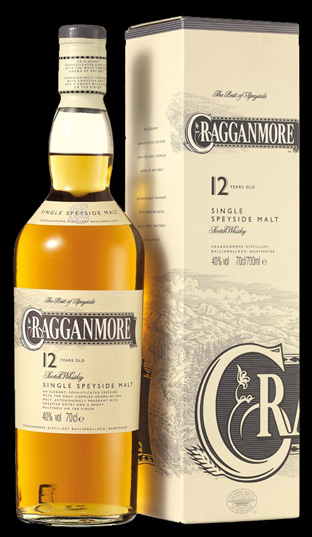

Highlands
highlands delas ofta in i mindre regioner. den första är Norra highlands (med Orkneyöarna) och den andra är Speyside och öarna i väster (Skye, Jura, Mull) för att beskriva de olika smaktyperna som finns i regionen. Kännetecknande för highlandswhiskyn är smakrikedomen, ofta med jordiga, blommiga och kryddiga toner.
Highlandpark 18 Years :
Alkoholhalt : 43%
Sockerhalt : Mindre än 3,0 gram/liter
Användning : Serveras rumstempererad.
Färg : Ljus, brungul färg.
Producent : Highland Distillers
Doft : Nyanserad, rökig doft med fatkaraktär, inslag av torkad tropisk frukt, nötter, mörk choklad och honung.
Se mer information om produkten på Systembolaget.Se mer information om produkten på tillverkaren hemsida
Cragganmore 12 years:
Whisky , Malt, Lite rökighet.Tillverkad i Storbritannien, Skottland, Highlands, Speyside.
Alkoholhalt : 40 %
Sockerhalt : Mindre än 3,0 gram/liter.
Användning : Serveras rumstempererad som avec.
Färg : Ljus, gulbrun färg.
Smak : Nyanserad, maltig, fruktig, aningen rökig smak med fatkaraktär, inslag av apelsin, nötter, honung och örter.
Doft : Nyanserad, maltig, fruktig doft med viss rökighet och fatkaraktär, inslag av apelsin, nougat, honung och örter.
Se mer information om produkten på Systembolaget.Se mer information om produkten på tillverkaren hemsida
Till sidans topp